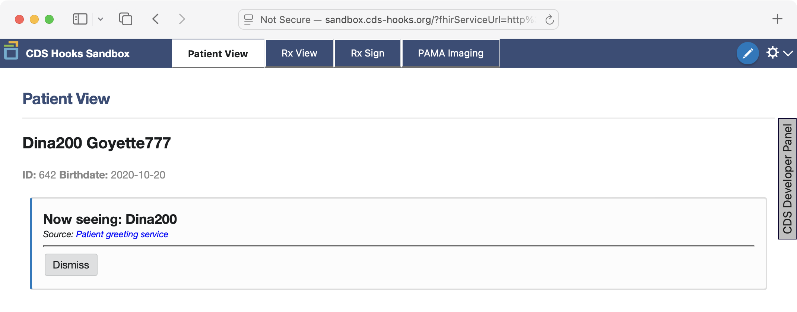

CDS Hooks Technical Example
This module is meant for technical users who are interested understanding the architecture of CDS Hooks by reviewing an example CDS Service. Please be familiar with SMART on FHIR and read the CDS Hooks introduction before continuing.
1 Example Overview: Facilitating Retinoblastoma Research
In this scenario, clinical care teams are prompted to offer enrollment into a research recruitment registry to parents and guardians of retinoblastoma patients who are interested in participating in clinical trials.
CDS Hooks will enable integrated, automated prompts. When a healthcare provider opens the chart of a patient diagnosed with retinoblastoma, a decision support card containing recruitment registry information and a link to an enrollment website will appear. This application will guide interested patient families through the process of signing up for inclusion in the research recruitment registry.
We will then consider the case where there is a prioritized clinical trial needing to recruit retinoblastoma patients within a certain age range, and demonstrate how CDS Hooks can be used to leverage patient age data from the EHR to more selectively identify patients meeting the desired eligibility criteria.
1.1 Problem Statement
Retinoblastoma is a rare pediatric cancer, making it difficult to recruit enough patients for research. Without automated prompts in clinical workflows, enrollment rates may be low, impacting the development of robust registries and research studies.
1.2 Objective
Learn how to implement CDS Hooks to trigger clinical decision support (CDS) interventions that leverage the patient-view hook to appropriately launch a SMART on FHIR app within a clinician’s EHR workflow.
2 Synthetic Data Sets
You will use synthetic FHIR data sets that include:
- Pediatric patients diagnosed with retinoblastoma.
- Pediatric patients without retinoblastoma.
The data for this use case can be accessed here in two different formats:
- JSON files containing FHIR Bundles, which can be used to manually populate a test FHIR server.
- A pre-loaded HAPI FHIR server database, which can be run using the HAPI FHIR server instructions in this README.
3 Exercise Steps
Create a CDS Service:
- Set up a CDS service that is called when the
patient-viewhook fires, triggered whenever a healthcare provider accesses a patient’s EHR record. - Configure the CDS service to filter patients and identify those diagnosed with retinoblastoma by examining relevant FHIR resources, such as
Conditionresources with retinoblastoma diagnosis codes. - Use the
prefetchfeature in CDS Hooks to load the necessary FHIR resource instances without making a separate request to the FHIR server.
- Set up a CDS service that is called when the
Create CDS Card:
- Create a link card that provides succinct decision support verbiage, urging the clinician to consider asking the patient’s parents or guardians if they would be interested in enrolling the patient into a research recruitment registry. The card should include a brief description and any relevant details about the registry, and end with a link to enroll in the registry. The enrollment process could be via a third-party registry website (i.e., any arbitrary website, as implemented in the example code below) or a SMART on FHIR application.
Test the Workflow:
- Simulate the workflow using the CDS Hooks Sandbox to observe how
patient-viewhooks trigger CDS cards for the appropriate patient cohort (e.g., pediatric patients with retinoblastoma).
- Simulate the workflow using the CDS Hooks Sandbox to observe how
Additional Steps to Refine CDS Selectivity:
- Integrate Additional Criteria: Modify the CDS service to include additional eligibility criteria, such as patient age, to refine the selectivity of CDS interventions. For instance, include logic to identify only retinoblastoma patients within a certain age range (e.g., older than 1 month and less than 18 years of age).
4 Approach & Solution
After ensuring you have access to a test FHIR server with the synthetic data described above, create a web application that responds to the following endpoints:
GET /cds-services, which provides a list of available CDS Service endpoints to the EHR like this:{ services: [ { id: "retinoblastoma", hook: "patient-view", title: "Retinoblastoma CDS Service", description: "Provides decision support for retinoblastoma cases.", prefetch: { conditions: "Condition?patient={{context.patientId}}", patient: "Patient/{{context.patientId}}" } }, ], }Multiple
servicesvalues can be included if the server supports more than one CDS Service.POST /cds-services/retinoblastoma, which is the CDS Service that runs when thepatient-viewhook is called.The request body to this endpoint will include information on the hook itself, the
context(e.g., the patient’s id for apatient-viewhook), and anyprefetchdata. The CDS Hooks documentation provides an example.This endpoint contains the business logic for the CDS hook. For this use case, this includes identifying when a given patient meets the criteria for displaying the retinoblastoma card: do they have a Condition resource instance with the retinoblastoma SNOMED code (
19906005) and meet the age criteria?If the patient meets the criteria, the appropriate card(s) are returned in JSON format. For example:
[ { summary: "Enrollment Link", indicator: "info", detail: "This patient is diagnosed with retinoblastoma. Please consider referring them to the retinoblastoma recruitment registry if their parents or guardians are interested in being contacted about research opportunities.\n\nClick below to guide the patient’s family through the signing up for the Retinoblastoma Research Recruitment Registry.", source: { label: "Enrollment App", }, links: [ { label: "Enroll Patient →", url: "http://example.com/enrollment-smart-app", type: "smart" } ] }, ]Multiple cards can be returned if needed. If you want to link to a URL for a non-SMART on FHIR application, use
type: "absolute"instead oftype: "smart".
There are a multitude of approaches for implementing such a server. An example is provided on GitHub implemented using JavaScript. To run the example:
Clone the GitHub repository locally.
Unzip the
synthetic_data/cds-retinoblastoma/database-cds-retinoblastoma.zipfile and move the enclosedh2.mv.dbfile into a new folder calledhapi_db. This.dbfile is the pre-loaded database for the HAPI FHIR server that includes the synthetic data for this use case.Run the following Docker command to start HAPI with this database:
docker run -it -p 8080:8080 -v ${PWD}/hapi_db:/usr/local/tomcat/target/database smartonfhir/hapi-5:r4-emptyOnce the server has started, you should be able to get a JSON response with this cURL command:
curl localhost:8080/hapi-fhir-jpaserver/fhir/Patient/86The output should look like:
{ "resourceType": "Patient", "id": "86", "meta": { "versionId": "1", "lastUpdated": "2024-09-27T14:14:10.772+00:00", "source": "#nEQKUSDEs9Q1J8i8", "profile": [ "http://hl7.org/fhir/us/core/StructureDefinition/us-core-patient" ] }, ... }Start the CDS Service example using the following Docker command:
cd example_cds_hook_service docker build -t example-cds-hooks-service-image . docker run -it -p 3000:3000 -v ${PWD}:/usr/src/app example-cds-hooks-service-imageThis will mount the
example_cds_hook_servicefolder inside the Docker container so any changes toapp.jswill be reflected immediately. See this README for more information.Go to the following URL to launch the CDS Hooks Sandbox using your
localhostHAPI server and CDS Service:The
patientIdvalue (86) refers to a synthetic patient who meets the criteria for the retinoblastoma CDS Card described above. You should see the card displayed:For a patient who does not meet the criteria, try this URL:
You should see the CDS Hooks Sandbox without the retinoblastoma card for this patient.

5 Other Research Applications
This use case showcases just a fraction of what CDS Hooks can offer to FHIR research application developers. By leveraging different types of hooks, such as the patient-view used above or hook types like encounter-start hooks, developers can achieve a high degree of flexibility in integrating clinical decision support (CDS) into various points of the clinical workflow. Here are some additional ways CDS Hooks can further enhance research application development:
Tailored User Interaction
- Dynamic Card Content: Implement logic in your CDS service to dynamically generate content on decision support cards based on real-time patient data. For example, if a patient matches the specific eligibility criteria for a clinical trial (e.g., age, diagnosis, comorbidities), the CDS card can display tailored information about the trial, including eligibility requirements, study location, and contact details. This dynamic approach allows for more personalized and contextually relevant prompts, improving the likelihood of clinician engagement.
Enhancing User Engagement and Feedback
User Feedback Mechanism: Integrate a mechanism within the CDS cards that allows clinicians to provide feedback directly from the EHR interface. For instance, clinicians can mark whether the decision support was useful, not relevant, or suggest improvements. This feedback loop can be invaluable for iteratively refining the CDS service and enhancing the relevance and accuracy of future interventions. It also fosters a sense of collaboration between the developers and end-users, leading to a more user-centered design.
Track Engagement Metrics: Implement analytics to collect data on CDS card interactions, such as display frequency, click-through rates, and subsequent actions taken by clinicians (e.g., initiating a research registry enrollment). By analyzing these engagement metrics, developers can assess the effectiveness of the CDS interventions, identify patterns of use, and make data-driven decisions for optimizing the CDS service. This continuous feedback process ensures that the decision support system evolves to better meet clinician needs and improve patient care.
Advanced Considerations for Research Integration
Condition-Specific Hooks: Beyond the
patient-viewhook, explore the use of condition-specific hooks such asorder-selectororder-signhooks. These hooks allow for CDS interventions at the moment of clinical decision-making, such as when a clinician is placing an order for a medication or test. For example, anorder-signhook could be used to prompt a clinician to consider enrolling a patient in a research study before finalizing a treatment order.Contextual Data Integration: Utilize the context provided by hooks, such as encounter information, patient demographics, and clinical context, to deliver highly specific and actionable CDS interventions. For instance, the
encounter-starthook can be used to identify eligible patients for a study based on the reason for their visit, ensuring that research opportunities are presented at the most relevant clinical moments.
Leveraging FHIR Resources
Advanced FHIR Queries: CDS services can perform advanced FHIR queries to gather detailed patient information, such as lab results, medication history, and imaging reports. These queries can be used to enrich the decision support content and provide clinicians with a comprehensive view of the patient’s status, enhancing the quality of the CDS intervention.
Patient-Specific Interventions: Use FHIR resources to tailor interventions based on patient-specific factors, such as genetic markers, social determinants of health, or prior treatment responses. For example, a CDS card could suggest a clinical trial based on a patient’s genetic profile, leveraging FHIR Genomics resources to identify potential matches for precision medicine studies.
By exploring the capabilities and potential use cases of CDS Hooks, FHIR research application developers can create more sophisticated and effective tools to support clinical research. These tools not only streamline the integration of research into clinical practice but also ensure that patients receive the most current and personalized care options. As you continue to develop and refine your CDS services, keep these considerations in mind to maximize the impact of your clinical decision support and research efforts.
6 Additional Information
6.1 Security and Privacy
When developing software applications involving exchange of health data, it is important to appropriately address security and privacy requirements for sensitive patient information. Use reputable open-source software libraries to save development time and avoid common security pitfalls.
Strong data protection measures should be employed to safeguard patient information. This includes ensuring patient data exchange complies with relevant regulations to protect sensitive personal health information (PHI). For instance, requirements may include compliance with regulations such as Health Insurance Portability and Accountability Act (HIPAA) in the United States, as well as with your institution’s local Institutional Review Board (IRB) and privacy rules.
Note that leveraging SMART on FHIR with CDS Hooks can helpful for addressing authorization and authentication. It is important to ensure that your CDS service handles these correctly, typically using OAuth 2.0 to authenticate with the EHR system and restrict access based on user roles.
6.2 Design
Because CDS Hooks enables integration into user workflows, thoughtful design can help ensure good user experience and avoid risks of resulting in a product with limited effectiveness due to alert fatigue, unnecessary workflow changes, etc. Avoid this by considering human-centered design.
6.3 Resources
There are many open-source software libraries and resources for helping developers work with FHIR and CDS Hooks. docs.smarthealthit.org lists helpful resources on software libraries, vendor sandboxes, synthetic data, etc.
Additional resources that are specifically helpful related to CDS Hooks include:
CDS Hooks Specification: This site provides the CDS Hooks specification as well as helpful resources and best practices on CDS Hooks development, a cheat sheet, examples, and more.
CDS Hooks Sandbox: This is the source code for the sandbox used above for testing CDS Hooks.
Sandbox CDS Services: This is the source code for the sample CDS Services used by the CDS Hooks Sandbox.
CDS Hooks is a standard for integrating clinical decision support (CDS) into Electronic Health Record (EHR) systems using web-based APIs. It allows external CDS services to be invoked within the clinician’s workflow, offering real-time guidance based on the patient’s context.
Some additional resources include:
Reference Documentation
- CDS Hooks official documentation.
- SMART on FHIR for SMART on FHIR documentation.
Software Libraries:
- FHIR.js for using SMART on FHIR with JavaScript applications.
Discussion Forums:
HL7 CDS Hooks Zulip Chat for community support.
SMART on FHIR Google Group for discussions related to SMART on FHIR and CDS Hooks.